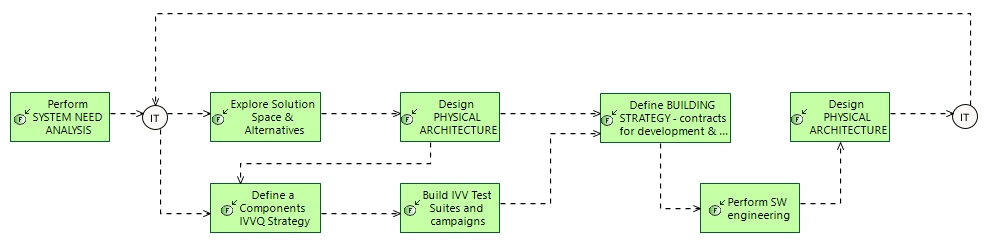

Agility in Engineering Course
Engineering Process
Engineering Capabilities > Support Collaboration in Engineering > Agility in Engineering Course
Challenge: How to build a path to a successful integration of agility within solution engineering .
- Define contents of agile increments based on valued capabilities
- Analyse impact of each one and preserve an (evolutive) vision of final solution architecture
- Align increments contents with IVV strategy and scheduling
- Maintain both incremental and final visions aligned
Related Diagrams
6 Agility in Engineering Course

This figure describes
How to build a path to a successful integration of agility within solution engineering .
- Define contents of agile increments based on valued capabilities
- Analyse impact of each one and preserve an (evolutive) vision of final solution architecture
- Align increments contents with IVV strategy and scheduling
- Maintain both incremental and final visions aligned
Define increments at solution engineering level, based on Capabilities and Value Analysis.
Keep coherency with IVV Strategy.
Drive software agile backlog accordingly; feed EPICs and User Stories based on Capabilities, and their descriptive functional chains and scenarios, appropriately cut into increment-size chunks if needed.
For each step of this process, involving an engineering task or activity, the description gives some hints and methological recommendations. These recommendations are complementary with the description of the involved activity per se, in the context of the engineering concern and the process.
Contribution of each engineering activity to this process
| Engineering activity | Specifics of activity for this process |
|---|---|
|
|
Capabilities or Functional Chains describing customers/users expectations in System Need Analysis are a good support to both capture their expected value, and drive agile increments contents in a value-driven approach. Each of them should be valued, and development ordered according to this expected value (e.g. highest Business Value, highest Criticality first). |
|
|
Build the solution in an incremental way based on value creation, using end-to-end Functional Chains and Scenarii. Develop the necessary and sufficient engineering artefacts in an iterative & incremental way.
|
|
|
Maintain a vision of the architecture and product at completion, and confront each iteration to it. Update the vision according to evolution of engineering and development. |
|
|
IVV Strategy will use the definition of increments and sprints based on functional chains and scenarios, and sequence IVV activities accordingly. Conversely, IVV constraints or opportunities may influence definition of increments. |
|
|
Test Campaigns and Test Cases are based on Capabilities, functional chains and scenarios feeding agile software development, hence securing coherency of IVV with system architecture and software. |
|
|
Define increments at solution engineering level, based on Capabilities and Value Analysis. Keep coherency with IVV Strategy. Drive software agile backlog accordingly; feed EPICs and User Stories based on Capabilities, and their descriptive functional chains and scenarios, appropriately cut into increment-size chunks if needed. |
|
|
Define Agile Release content and Epics from the Functional Chains, being defined and refined in co-engineering. EPIC/User Stories used for « value » implementation scheduling. (TCE) Maintain a vision of software architecture, including the goal at completion, and update them at each sprint. |